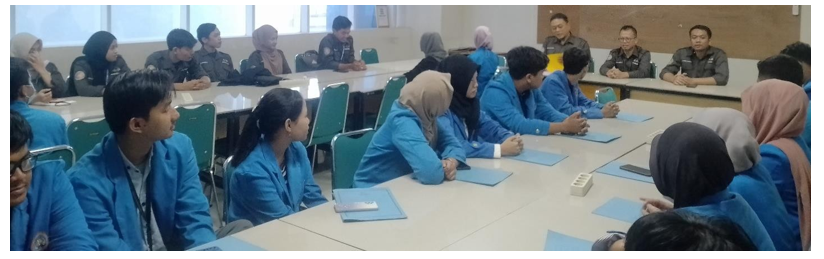
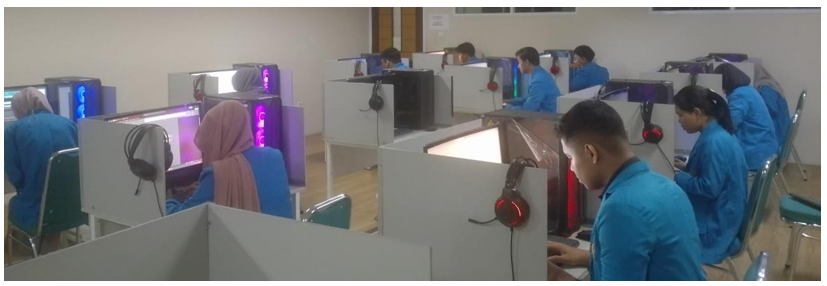
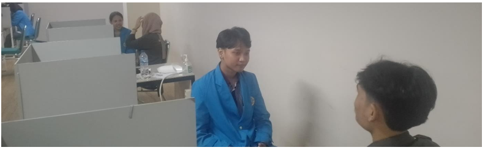

Kegiatan Recruitment Calon Asisten Laboratorium Teknik Informatika Universitas Pamulang
Pada hari Sabtu, 13 Januari 2024, Laboratorium Teknik Informatika Universitas Pamulang Melaksanakan kegiatan Recruitment Calon Asisten Laboratorium. Acara ini dihadiri oleh sejumlah tokoh penting dalam lingkup Prodi, termasuk Kaprodi Teknik Informatika yaitu Pak Achmad Udin Zaelani, dan Wakaprodi yaitu Pak Yan Mitha Djaksana, dan Koordinator Lab yaitu Pak Wasis Haryono. Turut hadir pula para asisten lab yang sudah berpengalaman serta calon asisten lab yang siap mengikuti proses seleksi.
Acara dibuka dengan penuh semangat oleh Pak Wasis Haryono, Koordinator Lab, yang memberikan gambaran umum mengenai tujuan dan pentingnya peran asisten laboratorium, Pak beliau juga menyoroti tanggung jawab dan harapan yang diletakkan pada Pundak para Asisten Laboratorium. Tak lama setelahnya, Pak Achmad Udin Zaelani, Kaprodi Teknik Informatika, memberikan sambutan yang menginspirasi kepada para calon asisten laboratorium. Beliau menyoroti pentingnya peran asisten lab dalam mendukung kegiatan praktikum dan penelitian di laboratorium.
Dalam sambutannya, Pak Yan menjelaskan bahwa Praktikum Komputer memiliki peran yang sangat vital dalam mendukung pembelajaran mahasiswa di bidang Teknik Informatika. Beliau berharap para calon asisten lab dapat menjadi fasilitator yang baik bagi mahasiswa dalam memahami dan menguasai konsep-konsep praktis yang diperlukan dalam dunia industri informatika. Kegiatan dilanjutkan dengan arahan dari Pak Wasis Haryono kepada para calon asisten lab, Setelah rangkaian sambutan, acara dilanjutkan dengan sesi ujian praktik dan wawancara parsial bagi para calon asisten laboratorium. Proses seleksi ini bertujuan untuk menilai kemampuan teknis dan interpersonal para calon. Selesai seleksi, suasana keakraban terjalin dalam sesi foto bersama, memperlihatkan semangat kebersamaan di antara para peserta dan pejabat universitas.
Acara ditutup dengan makan bersama, menciptakan kesempatan bagi peserta, pejabat universitas, dan panitia untuk berinteraksi secara lebih informal. Harapannya, kegiatan ini dapat menghasilkan calon asisten laboratorium yang tidak hanya memiliki keterampilan teknis yang baik, tetapi juga mampu berkontribusi positif dalam pengembangan laboratorium Teknik Informatika di Universitas Pamulang.
Sebagai penutup, berita acara ini mencerminkan momen berharga dalam pembentukan tim asisten laboratorium yang unggul dan siap menjawab tantangan dalam ruang lingkup prodi. Semoga kegiatan ini menjadi langkah awal bagi para calon asisten lab dalam membangun karier mereka di lingkungan akademis.